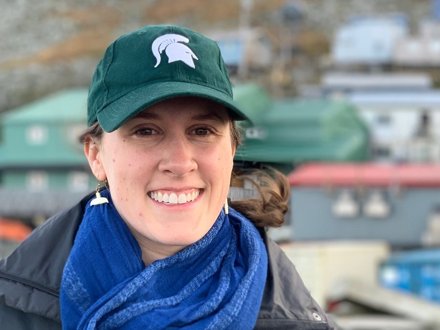

Home
Kelly Kapsar
Conservation Data Scientist
I turn large, messy environmental data into evidence that conservation practitioners can act on — mapping where human activity and wildlife collide, building open data products that outlast a single project, and translating results for the agencies, communities, and organizations who use them.
What I do
Data-driven answers to applied conservation questions
Spatial analysis at scale
Fifteen years of satellite vessel tracking. Continental-scale climate and terrain layers. Bird range maps for every non-migratory species on Earth. I work comfortably in the size class where analysis becomes an engineering problem, and I build the pipelines to match.
Open, reusable data products
Four of my datasets are published, versioned, and citable through the Arctic Data Center and the Environmental Data Initiative. Deliverables that other people can pick up and run — not one-off analyses that die with the report.
Findings that reach decision-makers
My vessel traffic and seabird risk work has been presented to USFWS oil spill teams, BOEM, the Alaska Marine Policy Forum, and Arctic coastal communities. I write for the audience that has to act on the result.
R Spatial statistics Python ArcGIS Git / GitHub Reproducible workflows Remote sensing Stakeholder engagement Spanish (proficient)
Current work
What I’m working on now
Four active projects spanning biodiversity data infrastructure, avian macroecology, Arctic marine spatial planning, and climate intervention policy.


Avian MetaNetwork
PLACEHOLDER — see the open-items list. Tell me in 2–3 sentences what this project asks, who is funding it, and who your collaborators are, and I will write this card.

Vessel dynamics in the Bering Strait
Mapping how ship traffic is reorganizing in one of the world’s fastest-changing maritime bottlenecks, and what that reorganization means for the wildlife and coastal communities that depend on it.

Ecological risk of solar radiation modification
PLACEHOLDER — a $270k Environmental Defense Fund award (2025). Tell me your role and the core research question and I will write this card.

About
A short version
I’m a conservation data scientist. I hold a Ph.D. in Fisheries & Wildlife from Michigan State University, where I was a University Distinguished Fellow, and a B.A. in Biology from Carleton College. I currently work as a data scientist and postdoctoral researcher with the Institute for Biodiversity, Ecology, Evolution, and Macrosystems and the Spatial & Community Ecology Lab at MSU.
My research has produced 17 peer-reviewed papers and four public datasets, and I was a principal contributor to a $1.5M NSF Arctic System Science proposal. Alongside that, I’ve spent a decade with the Saint Louis Zoo’s Arctic Socio-Environmental WildCare Program doing community-engaged conservation work in Alaska — which is where I learned that a result nobody can use isn’t a result.
I’m currently looking for research roles with environmental consulting firms and conservation NGOs where that combination is useful.